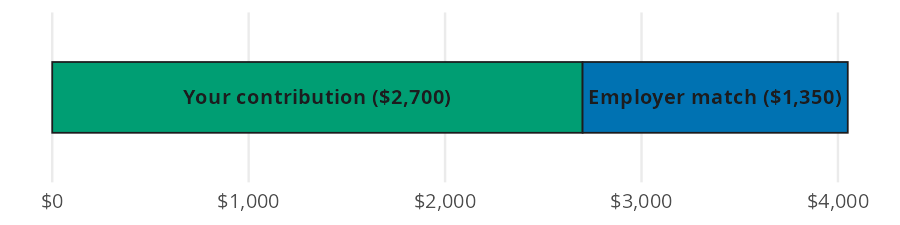
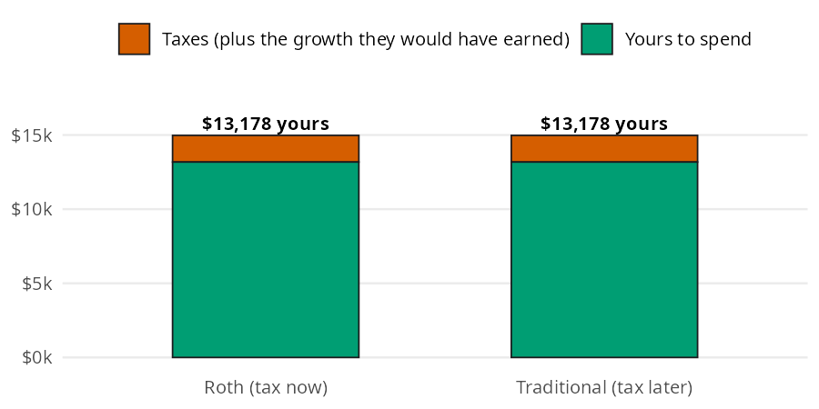

match_6 = employer_match(
salary=45000, contribution_pct=0.06, match_limit_pct=0.06, match_rate=0.50
)
match_61350.0A retirement account is a container for your investments, and the container decides how they get taxed. Two questions decide most of the value. How much free money does the employer match add? And does paying tax now (Roth) or later (Traditional) leave you with more? In this page I’ll answer both with employer_match() and after_tax_value(), using the numbers from the Retirement Accounts chapter of the book.
Both functions accept arrays and follow the conventions in Get started: every rate and percentage goes in as a decimal.
| Function | Returns | Units |
|---|---|---|
| employer_match() | what the employer adds each year | dollars per year (all percentages are decimals) |
| after_tax_value() | what a contribution is worth after tax and growth | dollars (tax_rate and rate are decimals) |
The chapter’s example is a $45,000 salary with a common deal: the employer matches 50% of your contributions on the first 6% of salary. If you put in 6%, the employer adds another 3%.
Think of what goes into the 401(k) as one bar. Your contribution is the first slice, and the employer adds a second, smaller slice on top:

The match slice is your contribution (up to the match limit) times the match rate. employer_match() takes the salary, your contribution, the match limit, and the match rate, all as decimals:
match_6 = employer_match(
salary=45000, contribution_pct=0.06, match_limit_pct=0.06, match_rate=0.50
)
match_61350.0Contributing 6% earns $1,350 a year in free money. That’s an instant 50% return on the $2,700 you put in.
Many employers enroll new hires at 3%. At that rate the match slice shrinks with your contribution:
match_3 = employer_match(
salary=45000, contribution_pct=0.03, match_limit_pct=0.06, match_rate=0.50
)
match_3675.0At 3% the employer adds only $675, so the default rate leaves $675 a year on the table.
Every retirement account taxes your money at some point. A Roth account taxes the contribution now, and the rest grows tax free. A Traditional account lets the whole contribution grow, and the tax comes out in retirement. The chapter sets aside $1,000, grows it at 7% for 40 years, and uses a 12% tax rate both now and later.

The $120 of Roth tax looks small today, but it would have grown along with everything else. Counted that way, the two bars are the same. Multiplying by (1 minus the tax rate) gives the same answer whether you do it first or last. after_tax_value() does that multiplication once and then grows the rest:
13177.522898502146With a 12% rate now and later, either account leaves you about $13,178. The only thing that changes the answer is a different tax rate in retirement. If that rate is 22%, the Traditional account leaves less:
11680.077114581447The Traditional account keeps about $11,680, or $1,497 less than the Roth. A Roth wins when your tax rate today is lower than it will be in retirement.
Array inputs compare several choices in one call. Here is the same $45,000 job at four contribution rates:
rates = [0.0, 0.03, 0.06, 0.10]
pl.DataFrame({
"contribution_pct": rates,
"you_put_in": [45000 * r for r in rates],
"employer_adds": employer_match(
salary=45000, contribution_pct=rates, match_limit_pct=0.06, match_rate=0.50
),
})| contribution_pct | you_put_in | employer_adds |
|---|---|---|
| f64 | f64 | f64 |
| 0.0 | 0.0 | 0.0 |
| 0.03 | 1350.0 | 675.0 |
| 0.06 | 2700.0 | 1350.0 |
| 0.1 | 4500.0 | 1350.0 |
The match stops growing at 6%. Contributing 10% still helps your retirement, but the extra 4% isn’t matched.
after_tax_value() takes several tax rates at once. Use your rate today for the Roth and your expected rate in retirement for the Traditional account:
tax_rates = [0.10, 0.12, 0.22, 0.24]
pl.DataFrame({
"tax_rate": tax_rates,
"after_tax": after_tax_value(
contribution=1000, tax_rate=tax_rates, rate=0.07, years=40
),
})| tax_rate | after_tax |
|---|---|
| f64 | f64 |
| 0.1 | 13477.012055 |
| 0.12 | 13177.522899 |
| 0.22 | 11680.077115 |
| 0.24 | 11380.587958 |
Find your rate now and your rate later in the table. Whichever account is taxed at the lower rate leaves you more.
These functions cover the math in the chapter, not every plan rule:
Back to the $45,000 job at 6%. You put in $2,700 a year and the employer adds $1,350. Treating each year’s deposits as one yearly contribution, future_value_series() from Investing Basics shows what 40 years of them grow to, and what the match alone adds:
deposits = 2700 + match_6
total_40 = future_value_series(contribution=deposits, rate=0.07, periods=40)
match_40 = future_value_series(contribution=match_6, rate=0.07, periods=40)
total_40, match_40(808522.2035541183, 269507.4011847061)The account grows to about $808,522, and $269,507 of that comes from the match. That’s the cost of skipping it.
The chapter’s last warning is about cashing out an old 401(k). A $5,000 balance cashed out at 22 loses a 12% income tax and a 10% penalty. With rate=0 and years=0, after_tax_value() just takes out the tax, so a combined 22% gives the check you’d receive. future_value() shows what the same $5,000 becomes if you leave it invested until 67:
cash_now = after_tax_value(contribution=5000, tax_rate=0.12 + 0.10, rate=0, years=0)
left_invested = future_value(present_value=5000, rate=0.07, years=67 - 22)
cash_now, left_invested(3900.0, 105012.2587933697)Cashing out leaves $3,900. Leaving it invested grows it to about $105,012, and that’s before any tax in retirement.
The employer match is part of your pay, and employer_match() shows how much of it you collect at each contribution rate. after_tax_value() shows that Roth versus Traditional comes down to one comparison: your tax rate now versus your tax rate later. Early in a career, when that rate is low, Roth is usually the better default.